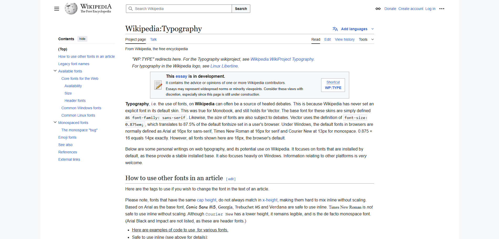
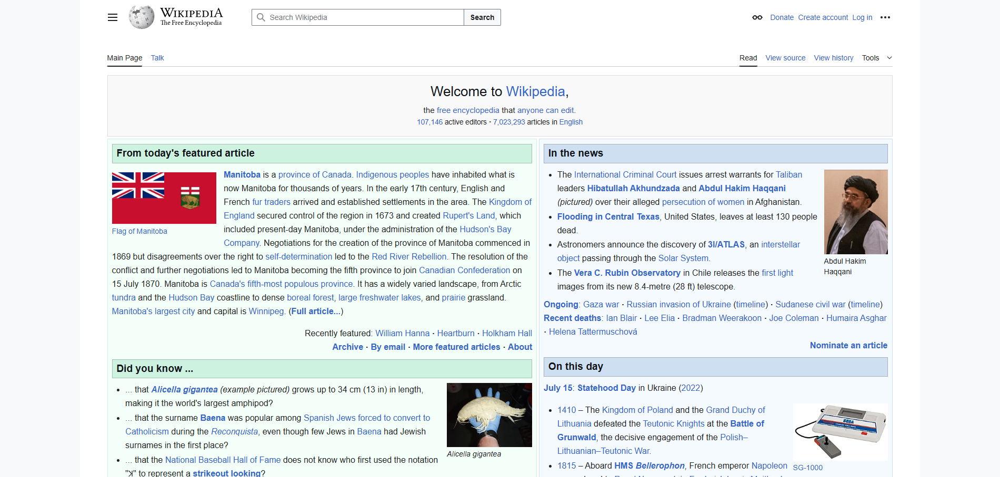
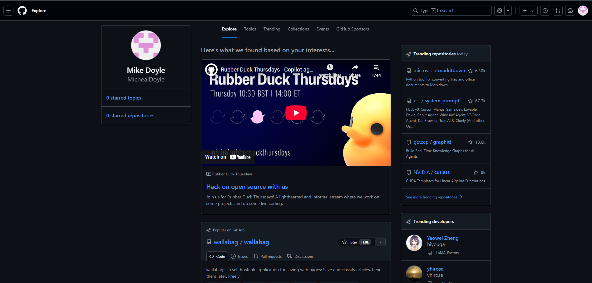
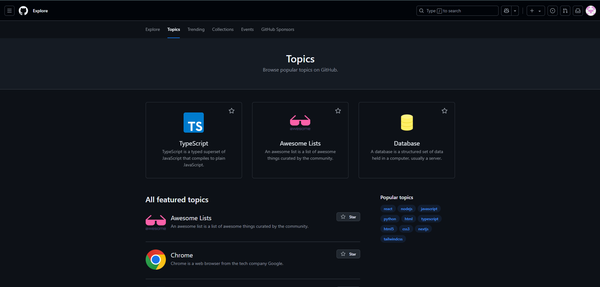

The Right Font For The Job
Choosing the correct typeface and font for your design is incredibly important and can even make or break your design. When choosing our typeface and font we want to make sure that it will provide a good reading experience and will match the theme of the content being displayed. The placement, size, medium, and length of the text is also a factor to consider when selecting your typefaces and fonts. Lets compare a few sites below to see how different types of content are created by following the key apsects of good typography.
Wikipedia
Wikipedia is a very text-heavy site that does a good job at using the key aspects of good typography to create a a good reading experience. The contrast between the text and background makes for good readability. The sans-serif typeface and clean legible font choice enhances the comprehension of the long blocks of text. It establishes a hierarchy by making the titles and headings distinct through the use of bold and sometimes larger text. The large blocks of text use good line spacing and margins to make them digestible and easy to follow along. The alignment on the page helps to structure the content and give it a more professional look.
 GitHub
GitHub uses the same key aspects to make a nice and enjoyable website but uses some of them in different ways to capture the different kind of content. The contrast of the text and background is very good in this design with the dark background with bright text making it easy to read. Using different typefaces like sans-serif and monospace for the appropriate content helps create the clean, technology aesthetic. Use of contrast, size, typefaces, fonts, and whitespace set the visual hierarchy and help distinguish the titles, headings, and important information. The spacing on the page is very good as it creates little to no visual clutter and everything is easily distinguishable. All of the content within the page is structured in a way that make it easy to find what you need and provide the professional look its going for.
 Conclusion
The content and goals of both of the websites are totally different, but both use typography aspects and principles to make their websites attractive to the demographic its trying to appeal to. Wikipedia is an online encyclopedia that displays large blocks of informative text and needs to meet needs that differ from something like github; which is a website used by developers to create, store, manage, and share code. Wikipedia uses mostly only a sans-serif typeface and is set to use whatever default sans-serif font you have installed and the broswer you are using. This is good for the type of content that its going to display, as its going to make it easily readable. GitHub is not as text-heavy and can rely on whitespace and layout to make the viewing experience more enjoyable. It also uses a couple of different typefaces and fonts throughout the site to help with the theme and hierarchy of content. Even though these sites are meant to serve different purposes, they both use typography to draw attention to key content, enhance readability and comprehension, and maintain consistency across different forms of media.